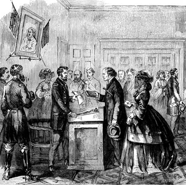

|
The "Ironclad Test Oath of Loyalty" was the oath of allegiance to the Union
required by the United States government of citizens and southerners in Union
occupied areas. Instituted in the summer of 1862, the Ironclad Oath remained in
place until the 1880s.
The Ironclad Oath incorporated and merged the various civil and military
oaths of allegiance that had been in place from the beginning of the Civil War.
It required the person taking it to proclaim that he or she had "never
voluntarily borne arms against the United States." In addition, this oath
required the taker to swear to uphold the United State Constitution, defend the
United States from foreign and domestic enemies, and forsake state allegiance.
In essence, the Ironclad Oath forced takers to renounce any affiliation to any
entity other than the United States government. It also asked Southerners to
deny an active role in secession and the war against the United States.
Federal authorities required that everyone in areas under Union control
during the Civil War swear to the Ironclad Oath. Northerners readily swore to
the terms of the oath as they supported the Union through military or material
|

This engraving shows South Carolinians taking
their oath shortly after the Civil War ended.
|
means. So did Unionists throughout the Confederacy as their areas came under
federal control. Those in occupied areas gained special protection and rights
from their status as loyal United States citizens. Some Unionist Southerners
took the Ironclad Oath multiple times, as different Union detachments marched
through their towns, hoping for the protection and rights the oath promised to
grant them.
Other Southerners were forced to take the oath despite their continued
support for the Confederacy. People living in Union occupied areas were
required to take the Ironclad Oath to do business in the occupied city or with
the Federal government. As a result, many unwilling Confederates swore to the
oath to support their families. Other Southerners took the oath because doing
so entitled them to reimbursement for property taken by Union troops. Other
Confederates refused to take the oath under any circumstances, arguing that it
denied their commitment to Southern independence and their right to secede.
Even so, many Confederates found themselves in a position that required them to
take the oath, despite their protests. In these instances, some took the
Ironclad Oath only under duress and without necessarily following its
guidelines.
Union officials also required that Confederate prisoners of war take the oath
before they were released on parole. Confederate soldiers who took the Ironclad
Oath did not always follow its rules against taking up arms against the United
States. Many gained parole to return to the ranks of the Confederate Army and
continue fighting Union troops. The Union terminated its practice of exchanging
Confederate prisoners by the end of 1863, in part due to the persistent
reenlistment of paroled prisoners.
The Ironclad Oath's strict prohibitions against takers having "voluntarily"
fought against the Union, caused problems after the Civil War. In a highly
charged atmosphere of sectional tensions and resentments, this stress on a
renunciation of Southerners' roles in the Confederate fight for independence
impaired the effort for national reunification. Many Southerners who played
roles in military and civilian capacities refused to renounce their support of
the Confederacy. Those who did so and did not take the Ironclad Oath were
prohibited from holding local, state, or federal office or serving in the
military. In response, many Confederate military leaders appealed to the
President for pardons and had their federal rights and citizenship restored
without a renunciation of their roles in the war effort. In 1884, the United
States replaced the Ironclad Oath with an Oath of Allegiance that only required
oath takers to support and uphold the United States Constitution.
Source: Joan Waugh, ed., Facts on File Encyclopedia of American
History: Civil War and Reconstruction, 1856 to 1869 (New York: Facts on
File, 2003), 182-83.
|